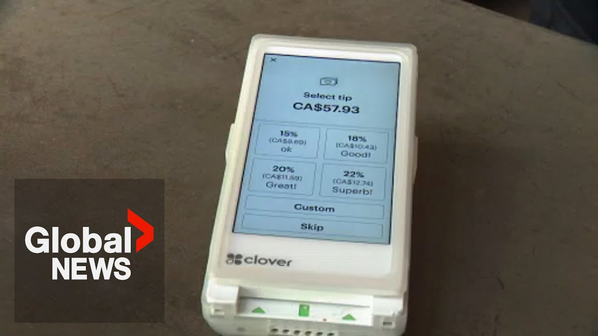

【加拿大人对刷卡机上的小费提示感到不满：民意调查】
Summary: A poll reveals Canadians' frustration with preset tip options on card machines, showing widespread rejection of high tip expectations post-pandemic, especially in fast food settings, while restaurants clarify they don't control the preset amounts.
摘要： 一项民意调查显示，加拿大人对刷卡机上预设小费选项感到不满，普遍反对疫情后高涨的小费预期，尤其是在快餐场合，而餐馆澄清他们并不控制预设金额。

⏱️ Estimated Reading Time: 3 min
Enjoying a meal out and then facing the infernal machine.
外出用餐后却要面对那台烦人的机器。
If you've ever felt yourself uncomfortably boxed in by a restaurant's preset tip options, you're going to be interested in Mario Cono's recent polling data.
如果你曾因餐馆的预设小费选项而感到不自在，你会对马里奥·科诺最近的调查数据感兴趣。
There's a massive rejection to some of the practices that we've seen.
人们对一些常见的做法表示强烈反对。
Working on a hunch that post pandemic tip creep was leaving Canadians feeling tapped out and annoyed.
出于一种直觉，即疫情后小费上涨让加拿大人感到经济紧张和恼火。
Conco's research company did a national poll on the issue.
康科的研究公司就此问题进行了全国性调查。
People understand that you need to tip, that the servers don't make enough money, but the reaction from most Canadians to the idea that you're compelling them to a specific size of tip is uh not great.
人们明白需要付小费，服务员收入不高，但大多数加拿大人对强制规定小费金额的反应并不好。
53% of those pled said they were bothered by the tip prompts on card readers.
53%的受访者表示他们对刷卡机上的小费提示感到困扰。
People were most inclined to tip for good service in a sit-down restaurant.
人们最愿意在正餐厅为优质服务付小费。
But if it's fast food or just grabbing a coffee, many fewer appreciated being put on the spot about a gratuitity.
但如果是快餐或只是买杯咖啡，很少有人喜欢被当场要求付小费。
Part of the problem is that people go everywhere and people are asking for tips.
问题的一部分在于人们到处都能遇到索要小费的情况。
BC Restaurant Association President Ian Tostinson agrees that tip creep is a real thing the industry is grappling with, but he had this to say about those suggested amounts on the card machines.
不列颠哥伦比亚省餐馆协会主席伊恩·托斯廷森承认小费上涨是该行业面临的问题，但他对刷卡机上建议金额的解释如下。
They come pre-programmed from the the credit card companies.
这些金额是由信用卡公司预先设定的。
So, it's not like the restaurants programmed them themselves.
所以，并不是餐馆自己设定的。
But that still leaves customers wondering who sets those amounts and based on what Seiko's research found that as people return to restaurants following the pandemic, tip expectations were just too high.
但这仍让顾客疑惑是谁基于什么设定了这些金额，而精工的研究发现，随着人们在疫情后重返餐馆，小费预期实在太高了。
Period.
就是这样。
There's no part of the country that is saying, "I want to be told to leave a tip of 20 or 25%."
全国没有一个地方的人会说：“我希望被要求付20%或25%的小费。”
Though transaction methods may have changed, even Tossson will tell you the underlying premise of the server's tip is the same as ever.
尽管支付方式可能已经改变，但托斯廷森也会告诉你，服务员小费的基本前提从未改变。
It's earned, not automatic.
小费是挣来的，不是自动的。
Paul Johnson, Global News.
保罗·约翰逊，环球新闻。